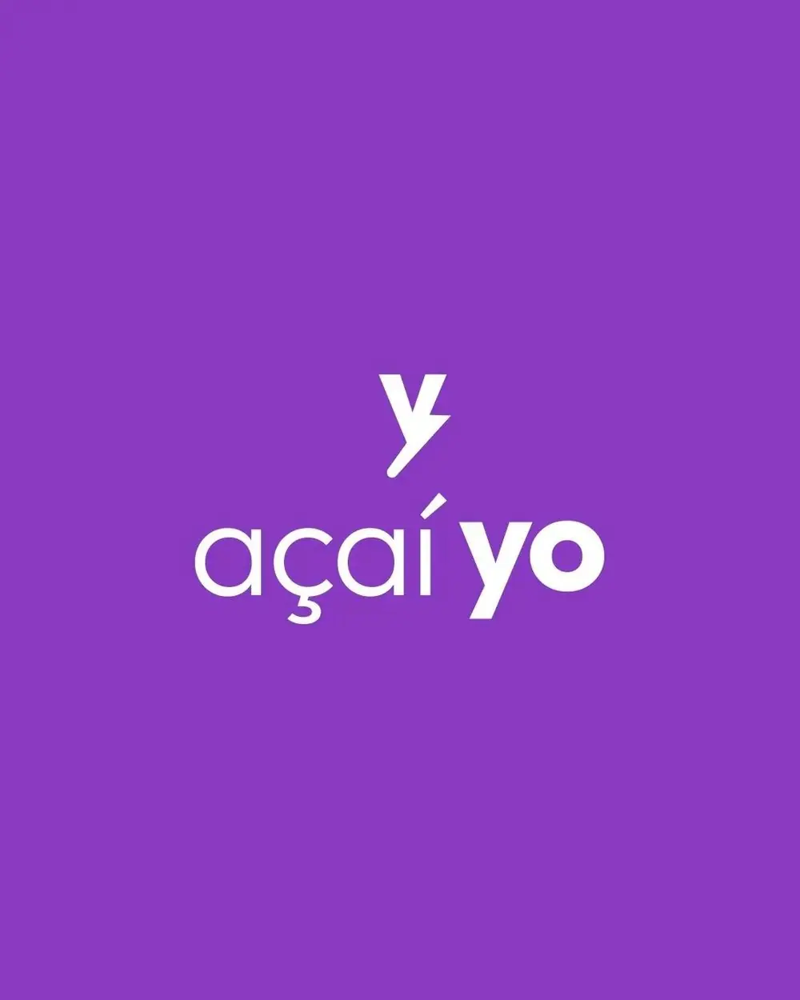
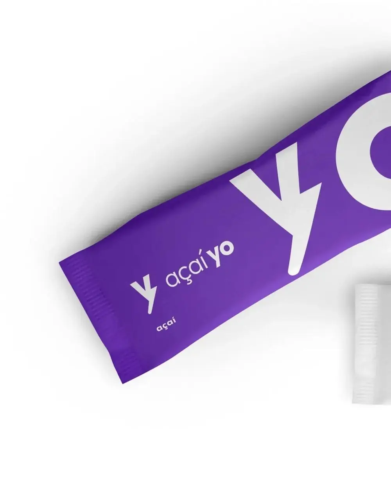
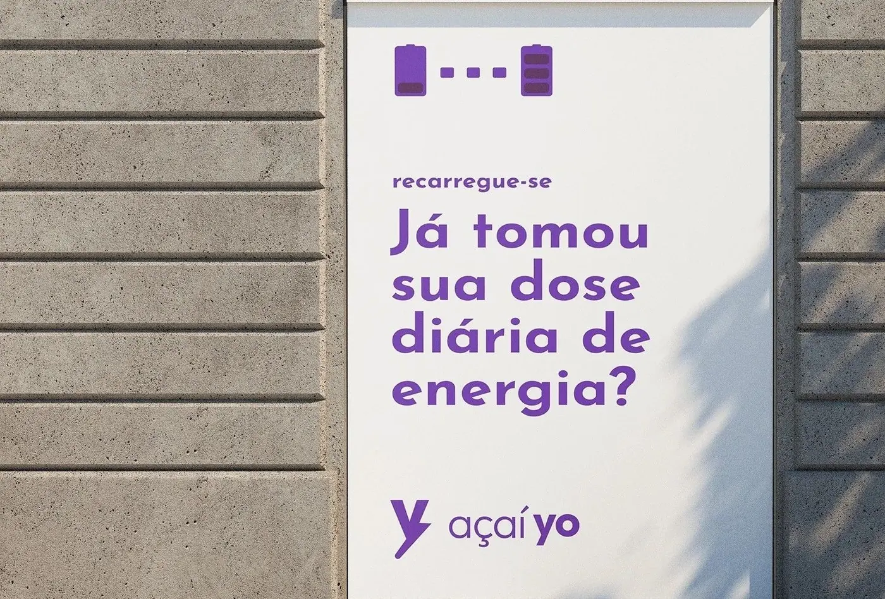
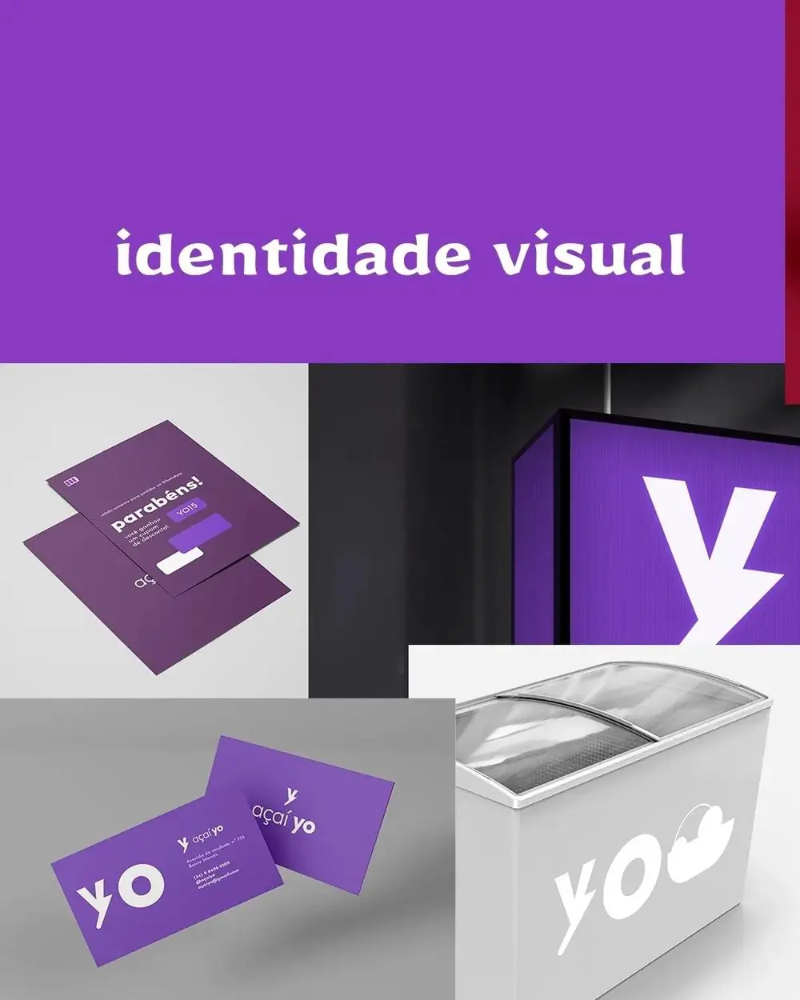
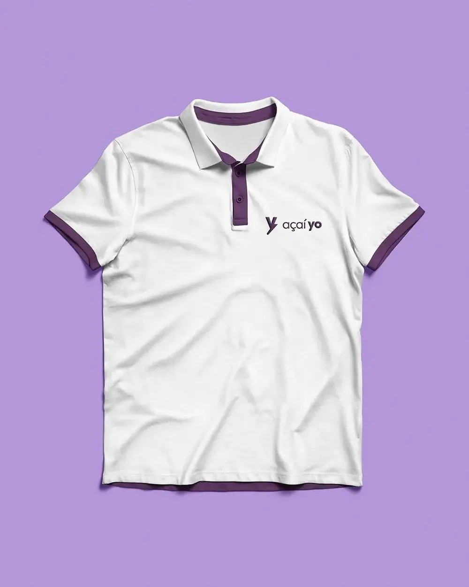
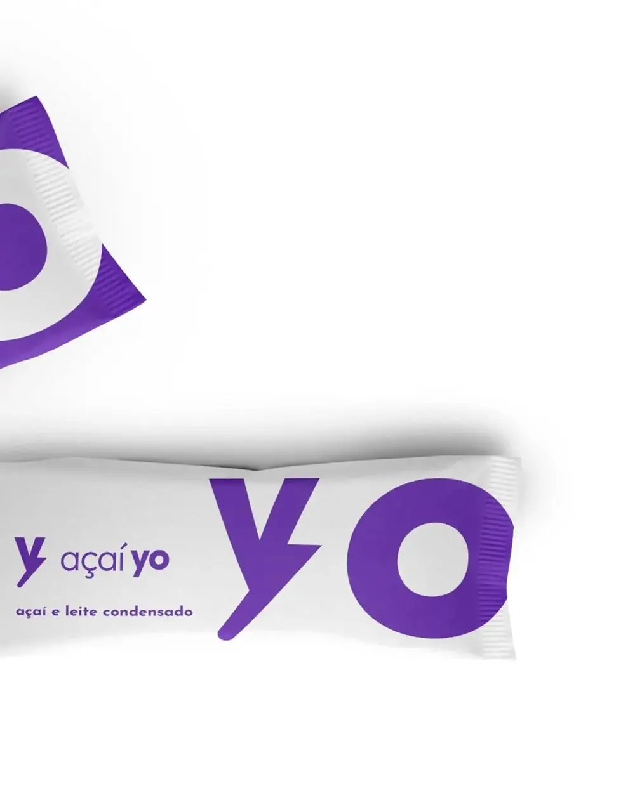
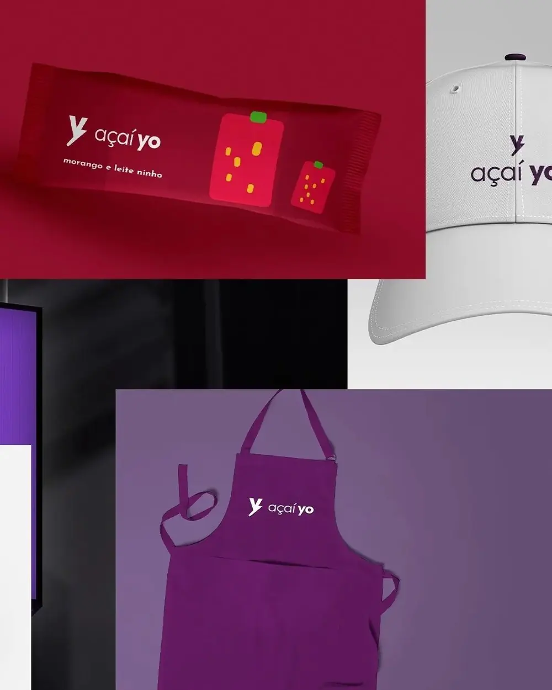

Este estudo apresenta a identidade visual da Açaí Yo, açaíteria voltada a um público jovem e ativo. O trabalho partiu de cinco problemas da empresa, organizados pelo método RACI de identidade. A cor ficou responsável pelo reconhecimento da categoria e pela organização dos sabores; o símbolo, um Y que vira raio, por tornar a marca lembrada; e o tom de voz, com a ideia de recarga, por falar com o público. Grafismos de bateria e uma versão animada do símbolo sustentam as campanhas.
Palavras-chave: identidade visual; açaí; método RACI; embalagem; campanha.
1Contexto
O açaí virou parte da rotina de quem treina, estuda e trabalha, e as açaiterias se multiplicaram. A maioria comunica da mesma forma: roxo, ilustrações da fruta, folhas de palmeira e letras com cara de verão.
Esse repertório comum ajuda o cliente a reconhecer a categoria de longe, mas faz todo mundo parecer igual. O projeto precisava das duas coisas: ser reconhecido como açaí e lembrado como Yo.
2Base teórica
Num segmento em que todo mundo usa roxo, o difícil é ser reconhecido como açaí e, ao mesmo tempo, lembrado como Yo. A Alina Wheeler fala disso: uma identidade forte precisa ser diferente, mas também precisa fazer sentido no lugar onde está (Wheeler, 2019). Por isso o roxo ficou, e a diferença foi para o símbolo.
E o símbolo precisava ser simples. O olho lê primeiro as formas simples e fechadas, que dá pra entender de uma vez só (Gomes Filho, 2000). Um Y que vira raio é isso: duas ideias numa forma só, que funciona de longe, na fachada ou no freezer.
A matriz RACI, que organiza todo o resto, vem da gestão de projetos. No capítulo 4 eu conto como adaptei ela para o design.
3Problemas de design
Antes de desenhar, os problemas. Saíram da conversa com o cliente e da análise do segmento:
- P1Ser reconhecida como açaí de longeNa rua e no aplicativo, o cliente precisa entender em um segundo o que se vende ali.
- P2Ser lembrada como YoDentro da categoria, a marca precisa de algo que só ela tenha.
- P3Falar com um público jovem e ativoA comunicação precisa ter energia e humor, sem parecer infantil.
- P4Organizar os saboresCom vários sabores, a embalagem precisa ajudar o cliente a escolher pelo olhar.
- P5Sustentar campanhas além do logotipoA marca precisa de uma linguagem que renda novas peças sem perder a coerência.
4Método RACI
O método RACI de identidade é meu, e parte de uma ideia simples: design existe pra resolver problema da empresa. Então cada elemento da identidade precisa ter uma função clara. Nada entra só pra enfeitar.
Na gestão de projetos, a matriz RACI cruza tarefas com pessoas e define quem executa, quem responde pelo resultado, quem é consultado e quem só é informado (PMI, 2017). No método, as tarefas viram os problemas da empresa e as pessoas viram os elementos da identidade: símbolo, tipografia, cor, grafismos, imagem, tom de voz e movimento.
O processo tem quatro passos:
- Levantar os problemas. Conversa com o cliente e análise do segmento pra listar o que a marca precisa resolver.
- Montar a matriz. Para cada problema, definir o papel de cada elemento com as letras abaixo.
- Desenhar. Cada elemento é criado a partir das responsabilidades que recebeu na matriz.
- Conferir. No fim, cada problema é revisto: o elemento que responde por ele fez a parte dele?
Responde
O elemento principal pra resolver o problema. Só um por problema.
Resolve junto
Elementos que trabalham junto no problema.
Apoia
Reforçam o trabalho, mas não carregam o problema.
Acompanha
Não atuam no problema, mas ficam coerentes com o resto.
5Matriz da identidade
A matriz mostra o papel de cada elemento em cada problema. Cada elemento foi desenhado a partir dela.
| Problema | Símbolo | Tipografia | Cor | Grafismos | Imagem | Tom de voz | Movimento |
|---|---|---|---|---|---|---|---|
| P1Ser reconhecida como açaí de longe | C | C | A | I | R | I | I |
| P2Ser lembrada como Yo | A | R | C | R | I | R | R |
| P3Falar com um público jovem e ativo | C | C | C | R | C | A | R |
| P4Organizar os sabores | I | R | A | R | I | I | I |
| P5Sustentar campanhas além do logotipo | C | C | C | A | C | R | R |
6Mapa da marca
Recarregue-se
7Símbolo
O símbolo é o principal responsável por tornar a marca lembrada (P2). A letra Y, inicial do nome, ganhou uma ruptura no braço direito e virou raio, um sinal universal de energia. Da mesma ideia saem os grafismos e o tom de voz.
- Y base. Um Y em sem serifa geométrica, com braços simétricos em relação ao eixo central.
- Ruptura. O braço direito é interrompido e se desloca para fora, criando o degrau do raio.
- Diagonal. Do degrau sai uma diagonal de cerca de 48°, que vira a perna do Y e dá sensação de movimento.
- Terminal. A ponta arredondada suaviza o raio e lembra uma gota, ligando o símbolo ao produto.

Esboço geométrico feito para explicar a construção. A arte final está nos arquivos da marca.
8Tipografia
A tipografia ajuda a fixar o nome (P2) e a identificar os sabores (P4). Uma sem serifa geométrica, de formas construídas, lê bem à distância e combina com a geometria do símbolo.

- Logotipo
- “açaí” em peso leve e “yo” em peso forte: o nome próprio se destaca e a categoria fica como apoio.
- Sabores
- O nome do sabor aparece pequeno e em caixa baixa na embalagem, sempre no mesmo lugar.
- Campanha
- A mesma família em frases curtas e grandes, como no outdoor.
9Cor
A cor responde por dois problemas. O roxo, cor da própria fruta, garante o reconhecimento da categoria (P1); Wheeler (2019) lembra que uma marca precisa ser diferenciada, mas também adequada ao seu contexto. E um sistema de cores por sabor organiza as embalagens (P4).
Proporção de uso sugerida:
Códigos HEX medidos nas peças. Confira os Pantone em um guia físico antes de imprimir.
10Grafismos e imagem
A bateria que enche e o próprio raio são os grafismos da marca e respondem por sustentar as campanhas (P5): com eles, qualquer peça nova continua parecendo Açaí Yo, mesmo sem o logotipo. Ilustrações simples de fruta marcam os sabores (P4).
Foto de produto de cima ou de perto, com o roxo bem saturado. A imagem ajuda o cliente a reconhecer de longe o que se vende ali (P1).
11Tom de voz e movimento
O tom de voz responde por falar com o público jovem (P3): frases curtas, animadas e com perguntas, como “Já tomou sua dose diária de energia?”. O “recarregue-se” resume a marca e ajuda a fixá-la (P2).
O símbolo tem uma versão animada: o Y se enche de açaí cremoso e termina com um pequeno respingo. É usada na abertura de vídeos e Reels e ajuda a fixar a marca (P2) e a manter a energia nas campanhas (P5).
12Aplicações





14Resultados
De volta à matriz: cada problema conferido pelo elemento que responde por ele.
15Considerações finais
A Açaí Yo mostra que a diferença não precisa vir de uma ruptura com o segmento. Mantendo o código da categoria e mudando o conceito, a marca é reconhecida como açaí e lembrada como Yo. Os próximos passos são ampliar o sistema de sabores e produzir fotografia própria.
Referências
- GOMES FILHO, João. Gestalt do objeto: sistema de leitura visual da forma. São Paulo: Escrituras, 2000.
- PROJECT MANAGEMENT INSTITUTE. Um guia do conhecimento em gerenciamento de projetos (Guia PMBOK). 6. ed. Newtown Square: PMI, 2017.
- WHEELER, Alina. Design de identidade da marca: guia essencial para toda a equipe de gestão de marcas. 5. ed. Porto Alegre: Bookman, 2019.